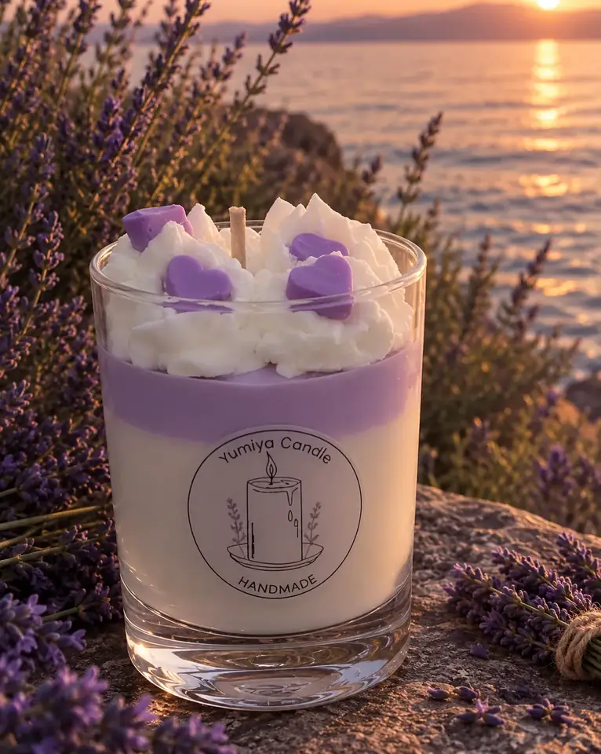
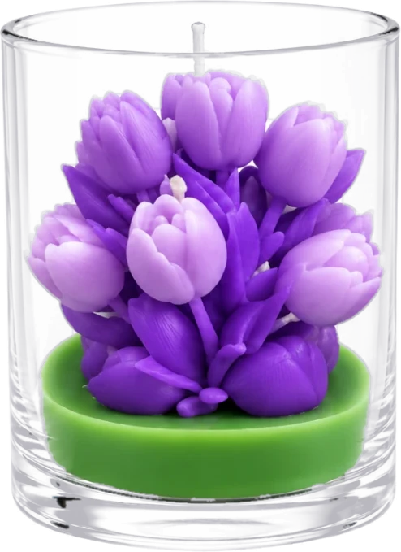
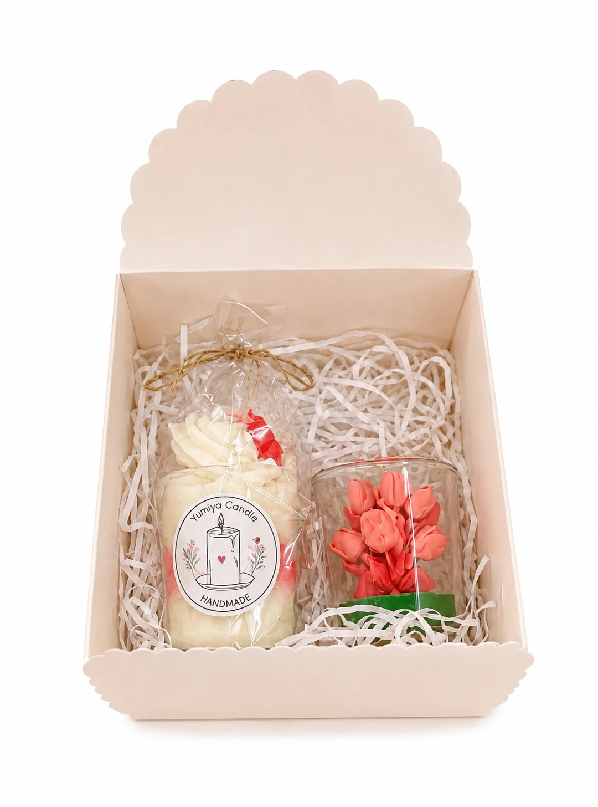

L’atelier
La naissance d’une bougie.
Une bougie Yumiya demande du temps et de la patience. Voici, étape par étape, comment elle prend forme à La Neuveville.
Cinq étapes
De la cire
à la flamme.
- 01
La cire
Tout commence par la cire de soja, 100 % végétale et sans paraffine, chauffée doucement puis teintée à la main.
- 02
Les couches
Chaque couche est coulée séparément : il faut attendre qu’elle prenne avant de verser la suivante. C’est ce qui donne aux bougies gourmandes leurs nuances si nettes.
- 03
La chantilly
La chantilly de cire est montée et posée à la poche, comme en pâtisserie. Les cœurs, fleurs et petites tablettes sont façonnés et placés un à un.
- 04
Les tulipes
Les tulipes sont modelées pétale par pétale, avant de trouver leur socle vert mousse au fond du verre.
- 05
L’écrin
Chaque bougie est emballée avec soin, puis livrée partout en Suisse.




Nos engagements
L’essentiel,
sans compromis.

Le coffret
Prêt à offrir.
Une bougie gourmande marshmallow-framboise et une tulipe vanille-fraise, réunies dans une boîte cadeau aux tons pastel nouée d’un ruban. Ajoutez un message lors de la commande, nous le glissons dans le colis.